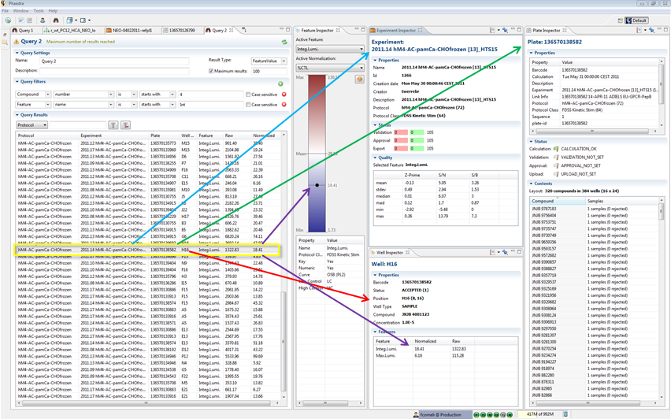
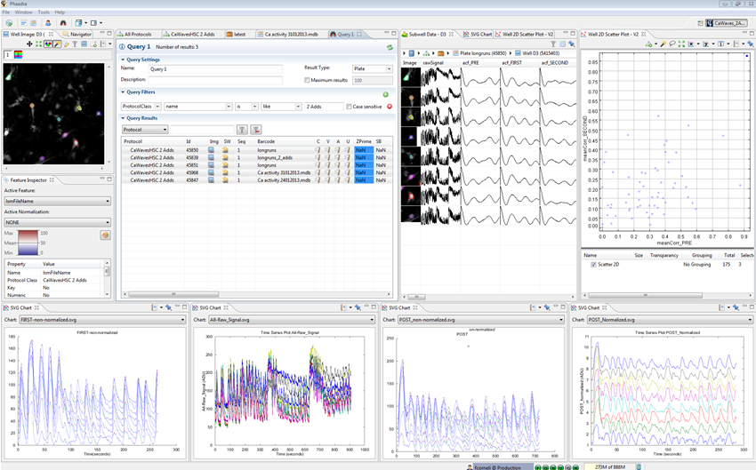
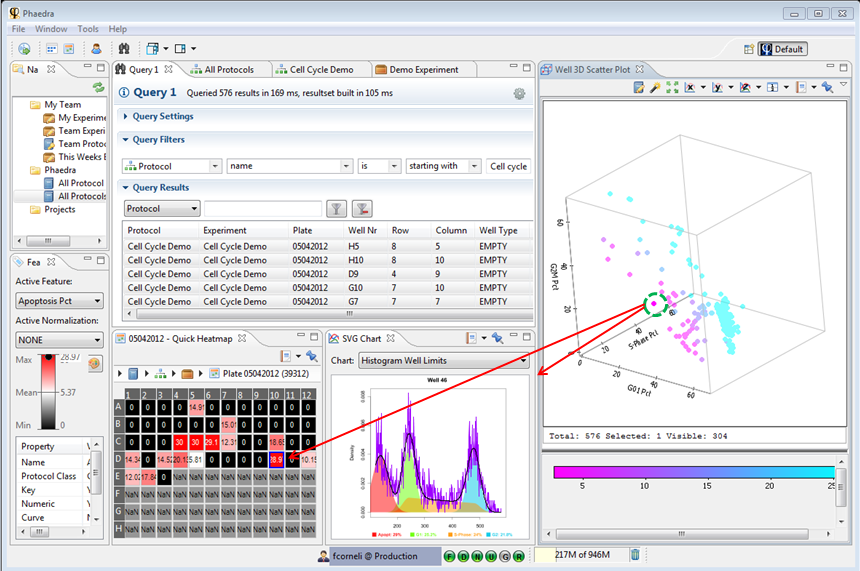

As soon as the query is finished, you can start working with the results.
All the possible actions will appear if you right-click on a result in the result table.
Depending on the Result Type, the double-click actions will differ:
| Result Type | Double-Click Action |
|---|---|
| Project | Opens the Project Plates |
| Protocol Class | Opens Protocol List Editor |
| Protocol | Open Experiment List Editor |
| Plate | Open the Heatmap Editor |
| Well | Open the Heatmap Editor |
| Well feature | None; right-click to open Pr. Class |
| Feature Value | Open the Well Inspector |
| Compound | Open the Compound Inspector |
| Curve | Open the CrC Details Inspector |
| Curve Fit params | Open the CrC Details Inspector |
Example 1:
All Views and Inspectors react to the selection of result row(s).

Example 2:
Showing the well image, the signals of individual cells and an overview of a single scatter plot of all wells. Select any well from the scatter plot to update the plot of 3 phases at the bottom of the workbench.

Example 3:
Showing all results in a 3D Scatter Plot. Selecting any plate will result in the change of the Quick Heatmap and the SVG Chart.
